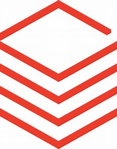

Tech Stack

Databricks
Azure
Kafka
Python
Docker
Git
Lead AI & Data Engineer specializing in GenAI, RAG architectures, and enterprise-scale data platforms across Azure, AWS, and GCP. I design and build production-grade AI systems that transform complex clinical and enterprise data into reliable, actionable insight.
I bring 9+ years of experience in data engineering and AI, with a strong focus on building scalable, cloud-native data platforms and GenAI solutions for global pharma and enterprise clients. From Hadoop and Spark clusters to modern lakehouse and vector-search architectures, I’ve led teams in transforming legacy workflows into intelligent, automated, and production-ready systems.
My work spans Azure, AWS, and GCP, with hands-on expertise in Databricks, Kafka, Snowflake, Denodo, and modern MLOps practices. I thrive at the intersection of data engineering, AI, and product thinking—designing systems that are not only technically sound, but also intuitive and impactful for end users.
Medallion & Data Mesh architectures, ingestion, cleaning, enrichment, transformation, analytics-ready modeling, scalable pipelines.
Azure OpenAI, Azure AI Search, LangChain, FAISS, hybrid RAG, knowledge stores, semantic search, code generation automation.
Azure (Functions, Synapse, EventHub, Logic Apps, DevOps), AWS (Lambda, API Gateway, Aurora), GCP exposure.
Databricks PySpark, MLflow, Hadoop ecosystem, Kafka (Apache, Confluent, Strimzi), log analytics, real-time ingestion.
Python, Scala, R, SQL, Airflow, Astronomer, CDAP, Snowflake, Denodo, Power BI, ELK stack, GitHub Actions, Azure DevOps.
Leading cross-functional teams, cloud migrations, AI platform design, Agile delivery, stakeholder alignment.
Azure
Kafka
Python
Docker
Git
Client: Eli Lilly
Designed an AI-powered automation tool generating high-quality R programs for SDTM/ADaM variables using FAISS, Azure OpenAI, and hybrid RAG.
Reduced manual programming effort by ~70% and built a scalable knowledge base.
Client: GSK
Modernized NLP workflows using vector search, Azure AI Search, and RAG pipelines.
Improved accuracy and reduced retraining effort by ~70%.
Client: Eli Lilly
Re-engineered Excel-based R outputs into a relational schema with zero dashboard disruption.
Reduced 54 tables to 28 using dynamic mapping and Python automation.
Client: Eli Lilly
Built AWS Lambda + Aurora PostgreSQL API enabling dynamic comments tracking for DSAER.
Integrated with Power Automate for seamless workflow automation.
Client: GSK
Built ETL-driven metrics dashboards using Databricks + Snowflake to surface metadata gaps.
Improved marketplace value by ~60% and doubled dataset usage.
Client: GSK
Migrated analytics to Azure using Databricks, Snowflake, and Denodo virtualization.
Achieved ~$200K annual savings and FAIR-aligned data consumption.
Client: GSK
Built MLflow-based text classification model deployed via Databricks serving endpoints.
Improved stakeholder productivity by ~50%.
Company: Excelra BV, London, UK
Clients: Eli Lilly GSK
Leading AI and data engineering initiatives for global pharma clients, focusing on GenAI, RAG, and scalable cloud-native platforms.
Company: Excelra Knowledge Solutions, Hyderabad
Clients: GSK Internal Excelra Confidential
Delivered cloud migrations, usage analytics, and behavior analytics solutions using Azure, Databricks, Snowflake, and Kafka.
Company: NTT Data Services
Built enterprise applications and data solutions, forming the foundation for advanced data engineering and AI platform work.
Recognized for driving innovation, leading cloud migrations, and delivering AI-powered automation that transforms enterprise workflows.
Institution: BITS Pilani
GPA: 7.8 / 10
Strengthened business, finance, and strategic decision-making foundations.
Institution: JNTU Hyderabad
GPA: 8.2 / 10
Built strong fundamentals in algorithms, systems, and software engineering.
You can download my latest CV here:
Download CV (PDF)Feel free to reach out for opportunities, collaborations, or consulting.